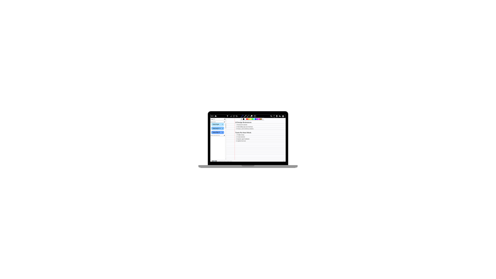
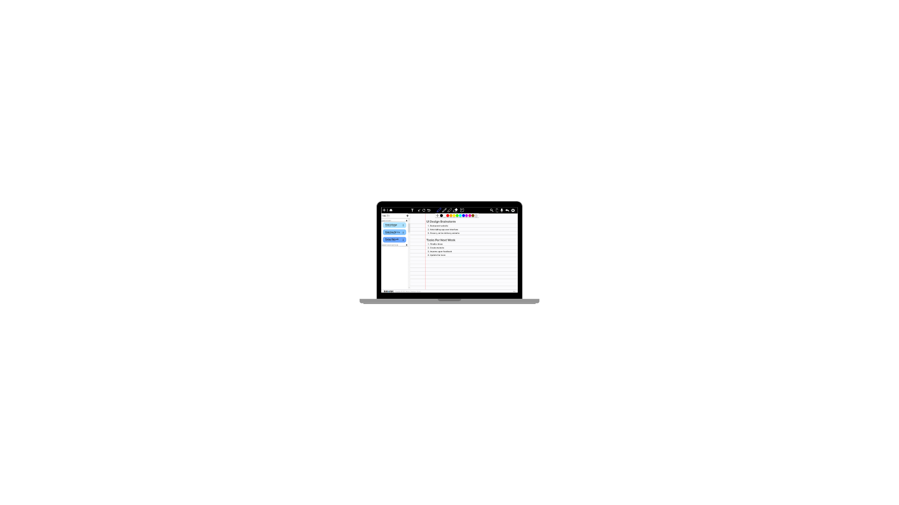

To the Future
Access a new way to note-take, connect, and link with other students through new solutions to accessibility.

 

InkLink revolutionizes team collaboration by prioritizing both accessibility needs and essential collaboration functions. Teams do not need to worry as InkLink can seamlessly share, organize, and access notes while catering to diverse accessibility requirements.
Real-time Collaboration
Version Control
Cross Platform Accessability
Integrated Tools & Platforms